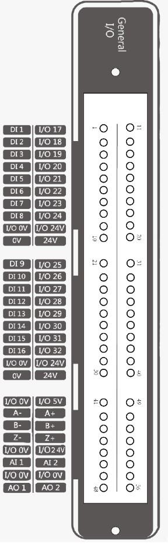
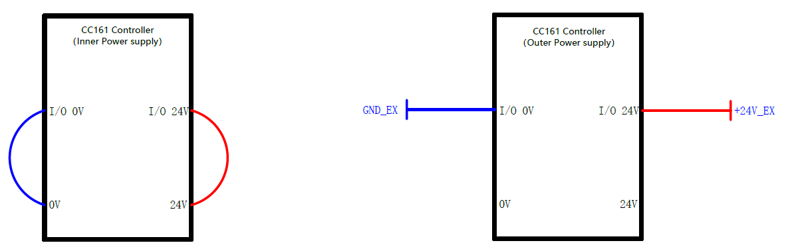
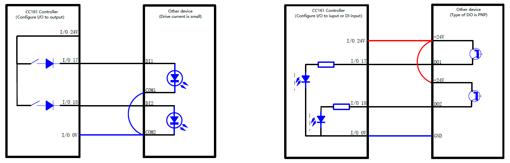
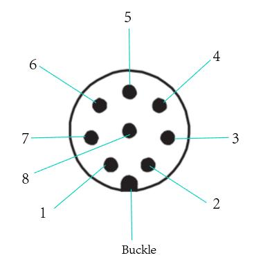

I/O Interface
Controller I/O
Controller I/O Interface Description
The robot controller contains I/O interfaces, for connecting to external equipment such as an air pump, PLC, etc. These I/O interfaces provide 32 digital inputs, 16 digital outputs, 2 analog outputs, and 2 analog inputs.
Powering the Panel
The controller’s IO panel must be powered by a 24V source for operation. The diagram below describes how the panel can be powered. The controller contains an internal power supply that can be used (left), or an external power supply can be used (right).
Warning
Do not use both the internal and an external power source at the same time. This has the potential to damage the controller.
Note
The internal power supply is limited to a maximum current draw of 2A. The external power supply should be limited to a maximum current draw of 4A.
Wiring and Triggering Digital Inputs and Outputs
The graphic below shows how to wire the controller and your device for input and output.
On the left, you can see how digital output should be configured. Once your controller’s I/O port is set for output, you can trigger your device by setting the output to high. This setup allows the ground of your device to be connected to the ground on the controller. Your device must be triggered with a small drive current. The output voltage for the controller’s digital output is 24VDC.
On the right, you can see how digital input should be configured. Once your controller’s I/O port is set for input, you can trigger your controller by providing a high signal to the DI port. This setup allows the ground of your device to be connected to the ground on the controller, and allows the +24V I/O output to power your device. The controller considers a signal as high when the DI voltage is at or near 24VDC. The controller considers a signal as low when the DI voltage is at or near 0VDC.
End Effector I/O
The cable used for the end pins is the designated cable, the model is the Lumberg RKMV 8-354. The end I/O pins are shown below.
| Pins | Name | Cable Color | Description |
|---|---|---|---|
| 1 | AI_1/485A | White | Analog input 1 / 485A |
| 2 | AI_2/485B | Brown | Analog input 2 / 485B |
| 3 | DI_2 | Green | Digital input 2 |
| 4 | DI_1 | Yellow | Digital input 1 |
| 5 | 24V | Gray | 24V(Out) |
| 6 | DO_2 | Pink | Digital output 2 |
| 7 | DO_1 | Blue | Digital output 1 |
| 8 | GND | Red | GND |